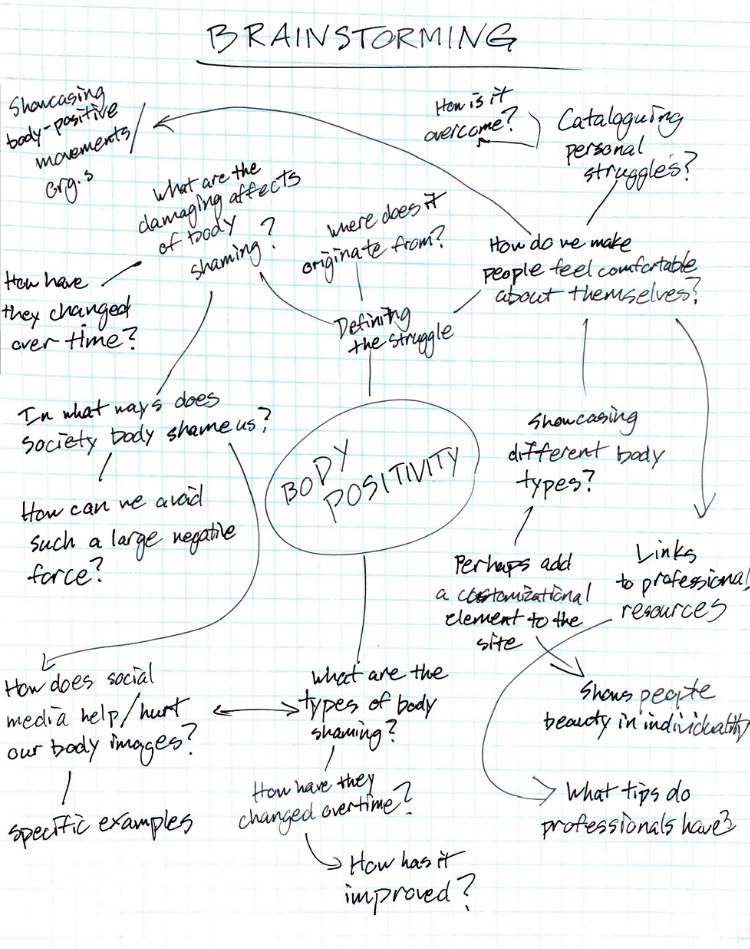

Coming up with a solid idea to follow was fairly tricky, as there were so many topics available to me from the start. Not to mention, I’m still not completely sure what kind of interactive experience I’m capable of making. I decided to focus on the topic of body positivity for a few reasons. First of all it is something I personally have struggled with all my life. Second, I feel it is one of the most underestimated issues today, but crucial in our daily lives. Body positivity can help us accept all walks of life, and most importantly ourselves
For my brainstorming exercise, I decided to create a mindmap with questions I have on the topic. These questions led to even more questions, which resulted in a better understanding of what I want to create from this project.
There are a few things I want to focus on in this project. First, I’d like to explore how body shaming can affect a person early on in there life and explore how that can affect them as they mature. Second, I want to explore ways professions help people deal with body issues. I want to give people the tools to be comfortable with themselves and realize the negative thoughts they have towards their own body image are likely projections of the pressure of society. Third, I would like to make an interactive element that makes the site’s appearance in some way customizable. This is a subtle way to show people how good it feels to be yourself, and how individuality is a beautiful thing.
At this moment, I feel a little more confident in how this project will turn out. I’m still unclear how I’m going to execute many of these ideas, but at least now I have a topic that I would like to focus on.